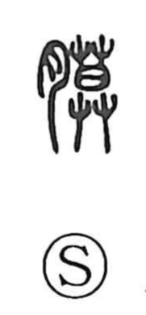

膜

Uncategorized
Kun: | On: maku
membrane ・ thin skin
Explanation
A phono-semantic character: 莫 acts as the phonetic and also carries the image of something spread out or screening off, as in words for curtains. With the flesh radical 月 indicating a body part, the whole points to a thin layer over or within the body—a membrane or fine skin covering the flesh or lying between muscles.